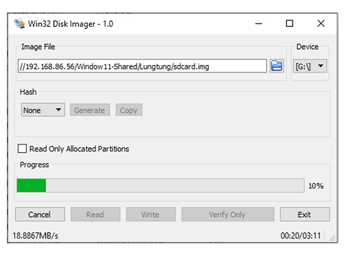
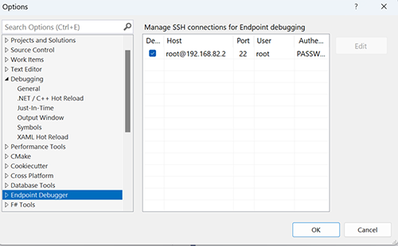
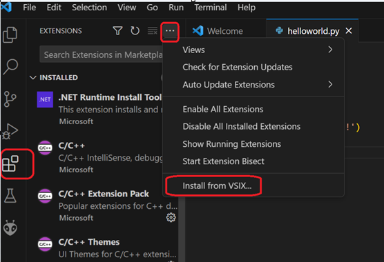
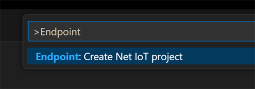

Getting Started
An Endpoint development environment consists of a device running Endpoint OS and a development machine with the required software and extension.
Endpoint Device Setup
The first step is to boot the Endpoint OS, which can be hosted on a microSD card or loaded inside the hardware's eMMC flash (when available).
Creating the OS image
Use your preferred disk imaging software to create a disk image on a blank microSD card, Win32 Disk Imager or balenaEtcher for example.
Find the latest Endpoint disk image here and burn it to the blank microSD card (4GB minimum).

Tip
Windows hides the microSD card once the media is loaded with the Endpoint OS image. Win32 Disk Imager will no longer see it. You need to use Disk Management tool to repartition/format the media, or use other tools like balenaEtcher.
Boot from SD
Once the image file is burned to the microSD card the OS is ready to boot. Insert the card into the microSD card slot of your hardware and connect the device to the PC.
If the device has an eMMC, use the SD Boot button to force the device to boot from the SD card.
Once the USER LED lights the board has successfully booted the Endpoint OS from the microSD. This should happen in less than 5 seconds.
Flashing the eMMC
Devices with eMMC will automatically boot from eMMC. The system will fail to boot if the OS image is invalid. SD cards can always be used to boot the system. Once the system is up, the Endpoint Config tool can be used to update the eMMC, as detailed in the Configuration page.
Development Machine Setup
Now, that the device is running the Endpoint OS, the development machine can be prepared for remote debug and deploy to the Endpoint device (using USB-C). This can be done using either Visual Studio or VS Code.
Endpoint for Visual Studio
With Endpoint you can deploy and debug using Visual Studio. Even the free community version.
If you don't already have the latest version of Visual Studio, download it here: https://visualstudio.microsoft.com/downloads/
Download and install the newest Endpoint Visual Studio Project System by going to Extensions > Manage Extensions. In the Manage Extensions dialog box select Online in the left panel. Type GHI Endpoint in the Search text box in the upper right of the window to search for and install the Endpoint Project System. You'll need to restart Visual Studio to let the extension installer complete the installation. Alternately you can download the Visual Studio Project System from our Downloads page and install the latest Endpoint Visual Studio Extension (.vsix). Open or double click on the file to install the extension.
After installing the .vsix file, create a standard Console application. Make sure to select .NET 8 in the framework option. By default the .NET application will run on the PC. We need to switch to run the program on the Endpoint device.
At the top of the Visual Studio menu navigate to Debug -> Options

From there navigate to the Endpoint Debugger option and make sure the box is checked for root@192.168.82.2. If a password was created using the Endpoint Config Tool also enter it here. If unchecked the application will only run on the PC.

Endpoint for VS Code
Endpoint also works using the VS Code IDE. If you don't already have the latest version, download it here: https://code.visualstudio.com/
Visit the extension section from within VS Code and search for and install Endpoint VSC Debugger. Alternatively, Download and install the latest Endpoint VS Code Extension (.vsix) file manually.

Navigate to View -> Command Palette

Search for Endpoint and select Endpoint:Create Net IoT project

Give the project a name and location.
NuGet Libraries
Endpoint uses the standard .NET libraries when available. When a library doesn't existing inside the .NET API relating to embedded hardware we use an Endpoint library to fill in the missing gaps.
It is preferred to access NuGet libraries through NuGet.org by using Visual Studio's default package source.
The Endpoint libraries are provided here in case you're having trouble with the online source or need an older or pre-release library that's not hosted on NuGet.
Learn more about the Endpoint API here.